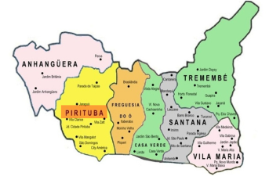

INFORMAÇÕES DEMOGRÁFICAS
O bairro de Pirituba se localiza na região noroeste, isso porque alguns órgãos da Prefeitura de São Paulo classificam o bairro localizado à zona norte e outros à zona oeste.
| ÁREA | DENSIDADE | POPULAÇÃO | RENDA MÉDIA |
|---|---|---|---|
| 57,4 km² | 95,73 hab/ha | 437,5 mil habitantes | R$ 4.200,00 |